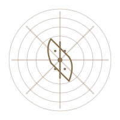
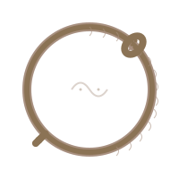

In the labyrinth of infinite narratives, we discover that all stories are one story— the hero's journey repeated across millennia, wearing a thousand masks, speaking in a thousand tongues, yet always returning to the same eternal questions.
The Monastory is not a place but a practice. It is the deliberate act of remembering that every story we tell participates in the Great Story—the monomyth that Joseph Campbell traced through cultures, the eternal return that Nietzsche glimpsed, the Tao that cannot be named yet speaks through every naming. We are scribes of the ineffable, cartographers of the invisible country where all myths converge.
Our Practice
The Ritual of Telling
Like the scribes in forgotten libraries, we craft stories with the precision of ritual. Each narrative is a ceremony, each word a gesture toward the ineffable truth that dwells in the space between what is said and what is heard.
The Perennial Return
We recognize in every tale the echo of the first tale, in every hero the shadow of the archetypal Hero. The Perennial Philosophy whispers through our stories: all paths lead to the same mountain peak, though each traveler walks alone.
The Thousand Names
One hero wears infinite faces—Gilgamesh, Odysseus, Buddha, Christ, the wanderer in your own mirror. We study the grammar of transformation, the syntax of awakening, the punctuation of death and rebirth.
The Infinite Library
In this digital monastery, we tend a library of Babel where every possible story already exists, waiting to be discovered. Our task is not creation but excavation— unearthing the eternal from the archive of the possible.
The Art of Sacred Narrative

Perhaps there exists, somewhere in the universe, a perfect story—one that contains all other stories, as the aleph contains all points in space. We do not presume to have found it. Rather, we engage in the ancient practice of story-crafting as a form of prayer, a meditation on the nature of meaning itself.
In the tradition of the Perennial Philosophy, we understand that the deepest truths cannot be spoken directly—they must be approached obliquely, through parable and myth, through the recursive patterns that appear in every culture's sacred texts. The hero's journey is not a formula but a recognition: we have always been telling the same story because we have always been living the same mystery.
Here, in this digital scriptorium, we practice the ritual of story-telling as the ancients practiced their mysteries. Each narrative we craft is an offering, a small mirror held up to the infinite. We write not to explain but to invoke, not to conclude but to open doors into the labyrinth where all seekers eventually meet themselves, transformed.
The Seven Principles of Sacred Storytelling
- Recursion: Every story contains all stories, as a fractal contains the whole in each part.
- Transformation: The teller is transformed by the telling; the listener by the listening.
- Paradox: Truth reveals itself through contradiction, not despite it.
- Silence: What is left unsaid speaks as loudly as what is spoken.
- Ritual: The act of telling is itself sacred, regardless of the tale.
- Anonymity: The story is older than its teller and will outlive them.
- Return: All journeys are circular; the end is always the beginning, seen anew.
Enter the Monastory
You who have found this threshold—perhaps you have been here before, in another life, another story. The door has always been open. What we offer is not knowledge but a practice: the deliberate crafting of narratives that remember what we have forgotten, that speak what cannot be spoken, that trace the eternal pattern in the ephemeral moment.
Come, tell your story. It is older than you know.
The Practice of Story-Crafting

Our practice is structured yet open, disciplined yet spontaneous—like the jazz musician who masters scales to transcend them, or the Zen calligrapher whose years of practice culminate in a single, effortless stroke.
1. The Descent
Every story begins with a departure from the ordinary world. We learn to recognize the call to adventure in our own lives, to see the threshold guardians for what they are: invitations to transformation disguised as obstacles.
2. The Ordeal
In the belly of the whale, in the dark night of the soul, the hero confronts what must be confronted. We practice sitting with uncertainty, dwelling in the questions that have no answers, finding the courage to not-know.
3. The Revelation
The boon, the elixir, the sacred knowledge—it comes not as information but as transformation. We learn to recognize the moment of insight, to honor it without grasping, to receive the gift without claiming ownership.
4. The Return
The hero must bring the treasure back to the ordinary world. We practice the art of translation—how to speak the unspeakable, how to share what can only be experienced, how to tell the story that allows others to find their own.
"The privilege of a lifetime is being who you are. The goal of the hero trip down to the jewel point is to find those levels in the psyche that open, open, open, and finally open to the mystery of your Self being Buddha consciousness or the Christ. That's the journey." — Joseph Campbell